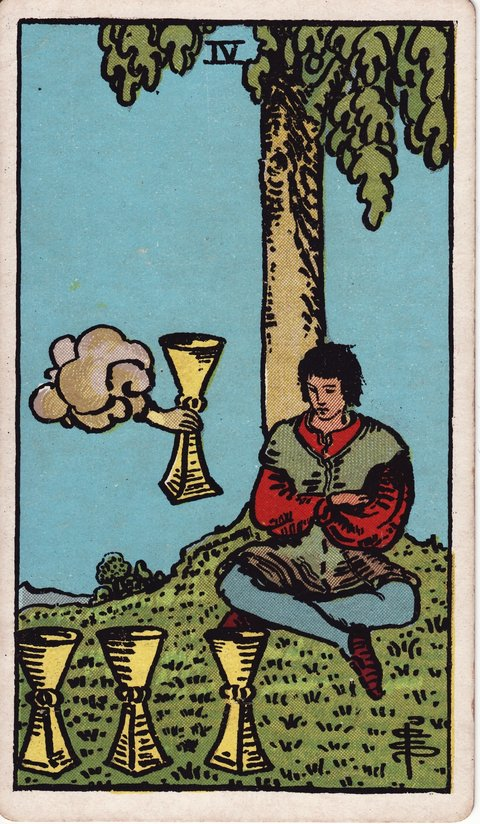

컵 · 타로 카드 백과사전
컵 4

정방향
키워드: 권태 · 무관심 · 놓친 기회 · 시들한 반응 · 곁눈질 · 흘려보낸 제안
조언: 익숙함에 안주하지 말고 눈앞의 기회를 다시 살펴보세요.
연애운
솔로
누군가 다가와도 시큰둥하게 반응하며 기회를 흘려보낼 수 있는 시기입니다. 익숙한 무관심에서 벗어나 마음을 조금 열어보세요.
커플
관계가 익숙해지며 설렘 없이 반복되는 나날을 보내는 시기입니다. 새로운 데이트나 대화 주제로 자극을 더해보세요.
재물운
소비
재정 관리에 흥미를 잃고 손 놓고 있을 수 있는 시기입니다. 통장을 방치하지 말고 한 번쯤 내역을 확인해보세요.
투자
괜찮은 투자 제안이 와도 심드렁하게 넘길 수 있는 시기입니다. 무관심 속에 좋은 기회를 놓치지 않도록 주의하세요.
취업운
구직
지원 과정에 흥미를 잃고 대충 임하다 좋은 기회를 놓칠 수 있는 시기입니다. 초심을 떠올리며 다시 집중해보세요.
이직
이직 제안이 와도 시큰둥하게 반응하며 고민만 길어질 수 있는 시기입니다. 막연히 미루지 말고 구체적으로 따져보세요.
직장운
팀워크
팀 활동에 흥미를 잃고 소극적으로 참여하게 되는 시기입니다. 작은 역할부터 다시 맡아보며 활력을 찾아보세요.
개인성과
업무에 대한 의욕이 떨어지며 반복적인 일상에 지치는 시기입니다. 새로운 업무나 역할에 도전해보는 것도 방법입니다.
사업운
창업준비
창업에 대한 열의가 식어 준비를 미루고 있을 수 있는 시기입니다. 처음 품었던 목표를 다시 떠올려보세요.
운영중
사업 운영이 매너리즘에 빠져 정체되고 있을 수 있는 시기입니다. 익숙한 방식에서 벗어나 새로운 시도를 해보세요.
학업운
시험준비
공부에 흥미를 잃고 책상 앞에 앉아도 집중이 안 되는 시기입니다. 목표를 세분화해서 작은 성취감부터 쌓아보세요.
진로고민
진로에 대한 고민 자체에 지쳐 무기력해질 수 있는 시기입니다. 잠시 쉬어가되 완전히 손을 놓지는 마세요.
건강운
신체
운동이나 자기관리에 흥미를 잃고 나태해질 수 있는 시기입니다. 작은 움직임부터 다시 시작해보세요.
정신
무기력함과 나른함이 계속되며 의욕이 떨어지는 시기입니다. 몸을 움직이는 것이 마음을 깨우는 데 도움이 됩니다.
대인관계운
새로운 인연
이미 아는 사람들에게만 머물러 새로운 인연에는 곁을 잘 주지 않는 시기입니다. 낯선 사람과의 대화에도 조금씩 마음을 내어보세요.
기존 관계
익숙해진 관계에 소홀해지며 연락이 뜸해질 수 있는 시기입니다. 먼저 안부를 물어보는 것부터 시작해보세요.
명예운
평판 관리에 무관심해지며 존재감이 옅어질 수 있는 시기입니다. 관심을 완전히 놓기 전에 스스로를 다시 챙겨보세요.
이사운
익숙한 곳에 안주하며 이동을 미루고 있을 수 있는 시기입니다. 지금의 무관심이 기회를 놓치게 할 수 있으니 다시 살펴보세요.
자식운
반복되는 일상 속에서 육아에 무기력함을 느끼는 시기입니다. 잠깐의 휴식을 스스로에게 허락해도 괜찮습니다.
역방향
키워드: 새로운 자각 · 관심 회복 · 재출발 · 고개 드는 호기심 · 되살아난 시계 · 풀리는 몸과 마음
조언: 새롭게 생긴 관심을 놓치지 말고 적극적으로 따라가 보세요.
연애운
솔로
무심했던 마음에 다시 호기심이 생기며 관심 가는 사람이 나타나는 시기입니다. 이번에는 먼저 다가가 보는 용기를 내보세요.
커플
권태로웠던 관계에 다시 활력이 돌아오는 시기입니다. 그동안 미뤄둔 대화를 지금 시작해보세요.
재물운
소비
손 놓고 지내던 씀씀이를 다시 돌아보고 싶어지는 시기입니다. 카드 내역을 열어보는 것부터 시작해보세요.
투자
새로운 투자 정보에 다시 흥미가 생기는 시기입니다. 관심이 생겼을 때 꼼꼼히 조사해보는 것이 좋습니다.
취업운
구직
손 놓고 있던 이력서와 자기소개서를 다시 열어보고 싶어지는 시기입니다. 그동안 쌓인 경험을 반영해 내용을 업데이트해보세요.
이직
새로운 자리에 대한 관심이 다시 살아나는 시기입니다. 망설이던 제안을 다시 검토해볼 만합니다.
직장운
팀워크
정체됐던 팀 분위기에 새로운 자극이 생기는 시기입니다. 이 변화를 팀원들과 함께 살려보세요.
개인성과
반복되던 업무 속에서 문득 새로운 방식을 시도해보고 싶은 마음이 드는 시기입니다. 작은 부분부터 다르게 접근해보세요.
사업운
창업준비
미뤄뒀던 창업 계획에 다시 관심이 생기는 시기입니다. 지금이 다시 움직이기 좋은 때입니다.
운영중
정체됐던 사업에 새로운 아이디어가 다시 떠오르는 시기입니다. 작은 변화부터 시도해보세요.
학업운
시험준비
책상 앞에 앉는 일이 예전만큼 힘들지 않게 느껴지는 시기입니다. 짧은 시간이라도 매일 앉는 습관부터 다시 만들어보세요.
진로고민
막막했던 진로에 다시 관심 가는 분야가 생기는 시기입니다. 이 관심을 구체적인 계획으로 옮겨보세요.
건강운
신체
가라앉았던 몸이 다시 활기를 찾기 시작하는 시기입니다. 다시 생긴 의욕을 무리하지 않게 이어가 보세요.
정신
무기력에서 벗어나 다시 의욕이 살아나는 시기입니다. 작은 목표부터 하나씩 실천해보세요.
대인관계운
새로운 인연
닫아두었던 마음의 문이 새로운 사람 앞에서 조금씩 열리는 시기입니다. 낯가림을 이겨내고 짧은 인사부터 건네보세요.
기존 관계
뜸했던 인연에 다시 관심이 생기며 연락하고 싶어지는 시기입니다. 망설이지 말고 먼저 연락해보세요.
명예운
옅어졌던 존재감이 새로운 계기로 다시 부각되는 시기입니다. 이 기회를 놓치지 말고 적극적으로 나서보세요.
이사운
새로운 곳에 대한 관심이 다시 생기며 이동을 고려하게 되는 시기입니다. 생긴 관심을 실제 계획으로 옮겨보세요.
자식운
아이와의 관계에 새로운 활력이 다시 생기는 시기입니다. 아이가 보이는 새로운 관심사에 함께 귀 기울여보세요.
같은 슈트: 컵 에이스 · 컵 2 · 컵 3 · 컵 4 · 컵 5 · 컵 6 · 컵 7 · 컵 8 · 컵 9 · 컵 10 · 컵 시종 · 컵 기사 · 컵 퀸 · 컵 킹
홈에서 직접 카드 뽑아보기 ↗